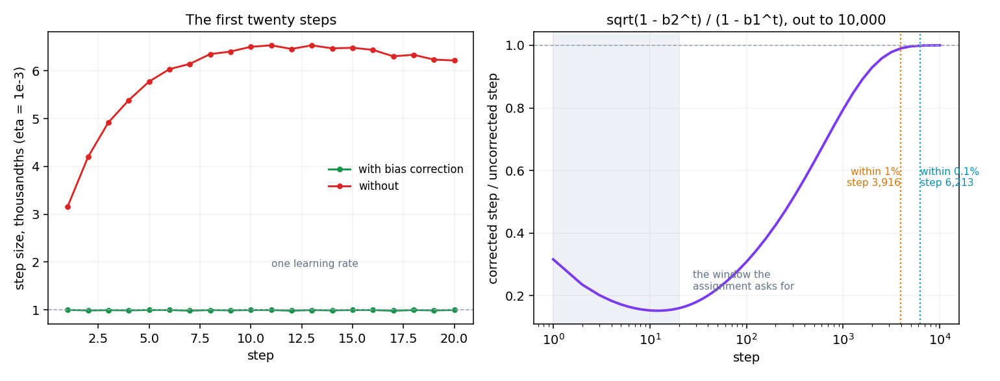
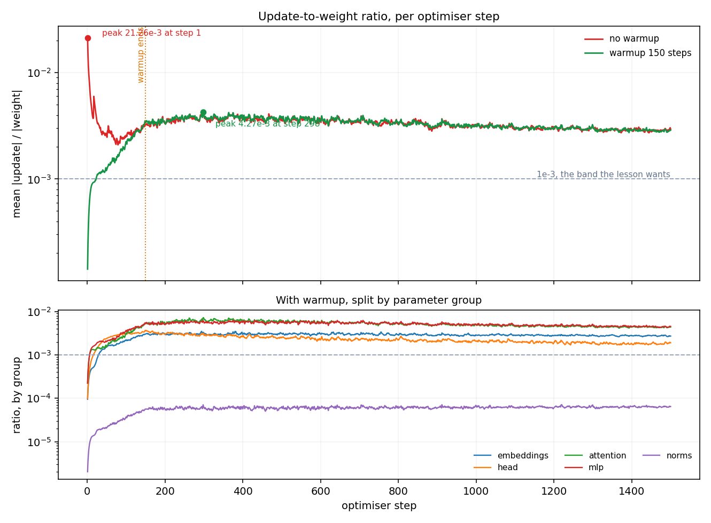
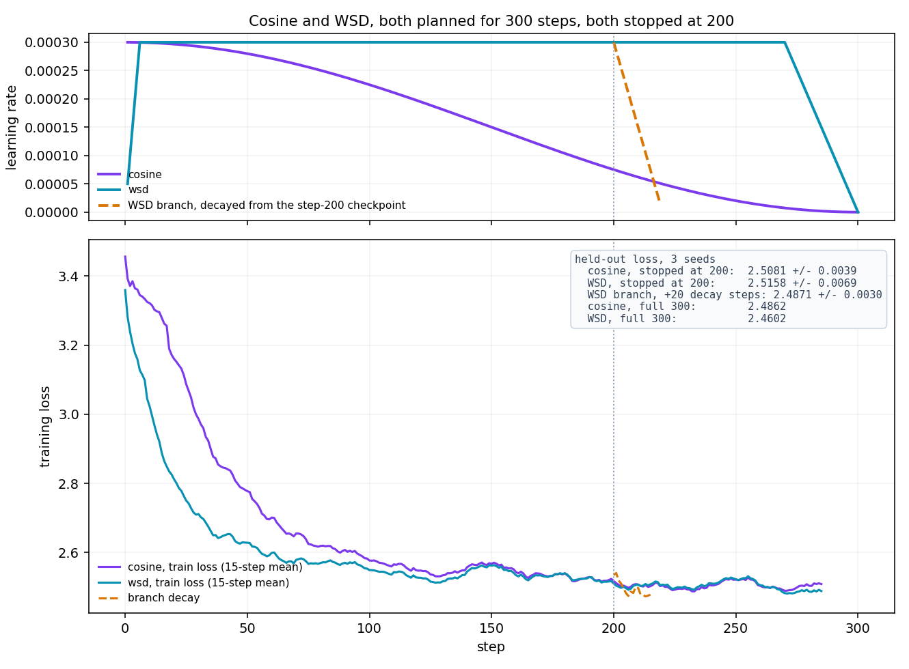
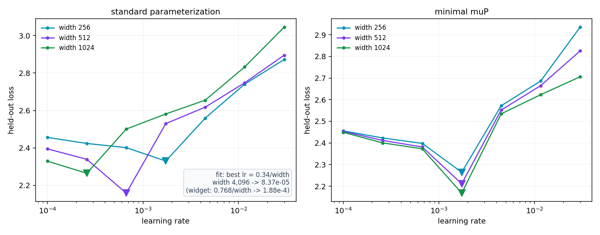

ERA V5 · Session 11 · assignment
A gradient gives a direction. Every rule in this session is a different answer to how far. Five measurements on nanoGPT, and the four places the measurement disagreed with the expectation.
01 Adam by hand
The Section 6 widget's five gradients, η = 1e-3, β = (0.9, 0.999), ε = 1e-8,
computed by hand and again through torch.optim.Adam.
| t | g | m | v | m̂ | v̂ | step | w |
|---|---|---|---|---|---|---|---|
| 1 | 0.50 | 0.050000 | 0.00025000 | 0.5000 | 0.250000 | −0.001000000 | 0.999000000 |
| 2 | 0.40 | 0.085000 | 0.00040975 | 0.4474 | 0.204977 | −0.000988126 | 0.998011874 |
| 3 | 0.60 | 0.136500 | 0.00076934 | 0.5037 | 0.256703 | −0.000994140 | 0.997017734 |
| 4 | 0.45 | 0.167850 | 0.00097107 | 0.4881 | 0.243132 | −0.000989847 | 0.996027887 |
| 5 | 0.55 | 0.206065 | 0.00127260 | 0.5032 | 0.255030 | −0.000996425 | 0.995031463 |
02 Bias correction
The ratio between the corrected and uncorrected step has the gradients cancel out of it:
√(1 − β2t) / (1 − β1t)
— a property of the betas alone, matching the simulation to 1.9e-07.

After twenty steps the two weights are 0.0991 apart, on a weight that started at 1.0. The difference does not stop mattering inside the window — it grows through it, and the answer to the question lives near step 4,000.
03 Update-to-weight ratio
Two 1,500-step runs, same seed and data order, differing only in a 150-step warmup. Logged every step for every parameter tensor: ‖Δw‖ / ‖w‖. nanoGPT ties the head to the embedding, so this run unties them — otherwise Section 14's head-versus-body question has no two tensors to ask about.

The learning rates are identical from step 150. The ratios are not, and the answer is a ladder rather than a step:
| the two runs stay within | from step |
|---|---|
| 50% | 60 |
| 25% | 83 |
| 10% | 758 |
| 5% | 1,500 — the last logged step |
| 1% | never |
They never rejoin, because after step one they are different models. The warmup run took its first hundred steps at a smaller rate and is at different weights forever; the two ratios converge in distribution, not in value.
| group, with warmup | peak | at step | settled |
|---|---|---|---|
| attention | 7.210e-3 | 299 | 4.664e-3 |
| mlp | 6.277e-3 | 375 | 4.829e-3 |
| head, untied | 3.683e-3 | 149 | 1.991e-3 |
| embeddings | 3.490e-3 | 294 | 2.830e-3 |
| norms | 0.071e-3 | 1220 | 0.062e-3 |
04 Cosine against WSD
Three seeds each, 300 planned steps, identical data order, held-out loss on a fixed 20-batch
slice of val.bin. WSD is the widget's shape: 2% warmup, flat to 90%, linear decay over
the last 10%.
| held-out loss at step 200 | at step 300 | |
|---|---|---|
| cosine | 2.5081 ± 0.0039 | 2.4862 ± 0.0078 |
| WSD | 2.5158 ± 0.0069 | 2.4602 ± 0.0033 |
| WSD checkpoint at 200, decayed over 20 extra steps | 2.4871 ± 0.0030 | — |

05 Learning rate against width
4 layers, n_head = width/64, B = 8, T = 256, 400 steps, seven learning rates
log-spaced 1e-4 to 3e-2 with each cell 2.59× the last. Two arms, 42 runs, about 45 minutes on
the card.

| standard | 1.00e-4 | 2.59e-4 | 6.69e-4 | 1.73e-3 | 4.48e-3 | 1.16e-2 | 3.00e-2 |
|---|---|---|---|---|---|---|---|
| width 256 | 2.4561 | 2.4239 | 2.4014 | 2.3300 | 2.5592 | 2.7407 | 2.8721 |
| width 512 | 2.3951 | 2.3391 | 2.1585 | 2.5297 | 2.6177 | 2.7479 | 2.8955 |
| width 1024 | 2.3293 | 2.2645 | 2.5008 | 2.5812 | 2.6550 | 2.8327 | 3.0451 |
| minimal muP | 1.00e-4 | 2.59e-4 | 6.69e-4 | 1.73e-3 | 4.48e-3 | 1.16e-2 | 3.00e-2 |
|---|---|---|---|---|---|---|---|
| width 256 | 2.4558 | 2.4230 | 2.3980 | 2.2646 | 2.5720 | 2.6861 | 2.9349 |
| width 512 | 2.4535 | 2.4115 | 2.3814 | 2.2114 | 2.5521 | 2.6646 | 2.8253 |
| width 1024 | 2.4491 | 2.4003 | 2.3730 | 2.1683 | 2.5345 | 2.6230 | 2.7057 |
Each cell is one seed. Re-running every width's best cell and its two neighbours on two more
seeds — python assignment.py 5b — keeps all three picks.
| width | single-seed pick | 3-seed mean pick | worst per-cell spread |
|---|---|---|---|
| 256 | 1.73e-3 | 1.73e-3 | 0.0451 |
| 512 | 6.69e-4 | 6.69e-4 | 0.0098 |
| 1024 | 2.59e-4 | 2.59e-4 | 0.0145 |
scorecard
| widget's number | measured | |
|---|---|---|
| Adam moves every weight by about η | within 0.5% of η, five steps | holds |
| first step 3.16 η without correction | 3.16 at t=1, 6.24 at t=20 | holds, then worsens |
| ratio 19.2e-3 without warmup | 21.26e-3 | within 11% |
| ratio 2.83e-3 with warmup | 4.27e-3 | same order |
| the ratio should sit near 1e-3 | 3.06e-3 | our η is 3× too large |
| best η = 0.768/width | K = 0.343, slope −1.37 | shape right, constant not portable |
| muP aligns the minima | 1.73e-3 at all three widths | holds exactly |